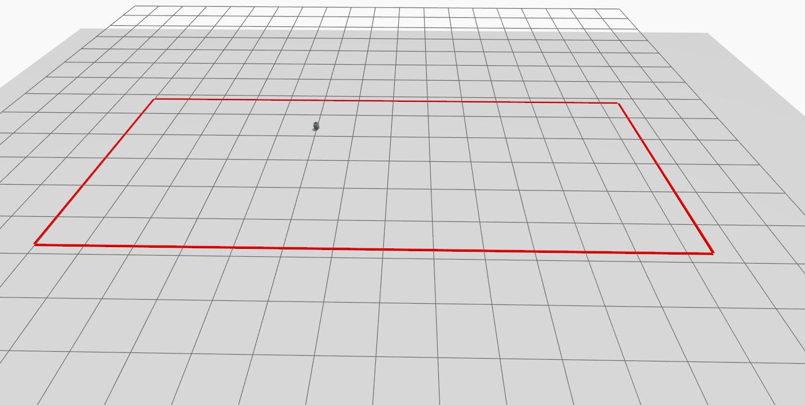
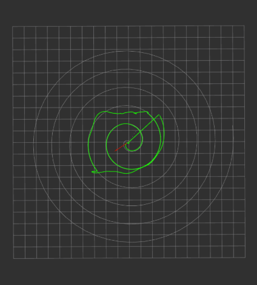

CBF safety control for nonholonomic robots
Control barrier functions for waypoint control of nonholonomic robots near safe-set boundaries.
- Lab
- Nonlinear Control Research Group (NCR), University of Florida
- Advisors
- Dr. Warren Dixon, Dr. Rushikesh Kamalapurkar
- Mentor
- Keith Currier (Ph.D. student)
- Period
- Spring 2026 to present
- Tools
- Python, ROS 2, Gazebo Harmonic
Overview
A standard Control Barrier Function assumes a fully-actuated system. A differential-drive robot's angular velocity has no instantaneous effect on a barrier evaluated at its own centroid, so the constraint has no sensitivity to ω and a CBF-QP safety filter can brake the robot in front of a wall but can't turn it away. This work resolves that by evaluating the barrier at a look-ahead point offset from the robot along its heading, a standard feedback-linearization technique. It makes the barrier's time derivative affine in the full body-frame input u = [v, ω], giving the filter direct authority over steering instead of just speed.
Approach
- Safe set. The lab modeled as a rectangular region in Gazebo, expressed as four independent half-plane barriers built from the room's real interior dimensions.
- Safety filter. A minimally-invasive QP, min‖u − unom‖² subject to Ḃ ≤ −k·B at each wall, solved every control cycle in cvxpy/OSQP for the closest-to-nominal command that stays inside the safe set.
- Tracking controller. A feedforward + look-ahead-point feedback law driving a nominal, pre-filter command along a reference path, so the QP had a real wall-approaching input to intervene on.
- Simulation. TurtleBot3 Burger and lab geometry in Gazebo Harmonic (ROS 2 Humble), with the full tracker → CBF-QP filter → actuation pipeline running as ROS 2 nodes in closed loop.
Results
The robot remained inside the prescribed safe set throughout the run, without crossing the boundary or colliding with a wall.
Tracking performance degrades once the commanded trajectory pushes beyond the feasible region and the robot settles near the boundary. This is expected: the tracking controller continues requesting motion toward an unsafe reference while the CBF-QP prioritizes safety and rejects that motion. The resulting tracking error is therefore a limitation of the nominal tracking objective near an infeasible path, not a failure of the CBF—the safety filter is doing exactly what it is designed to do.
Figures



